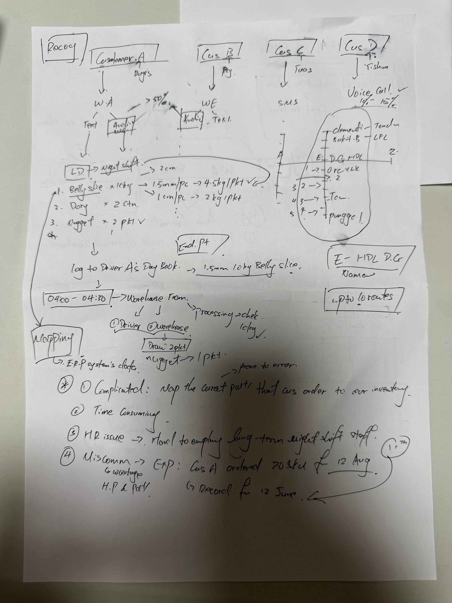
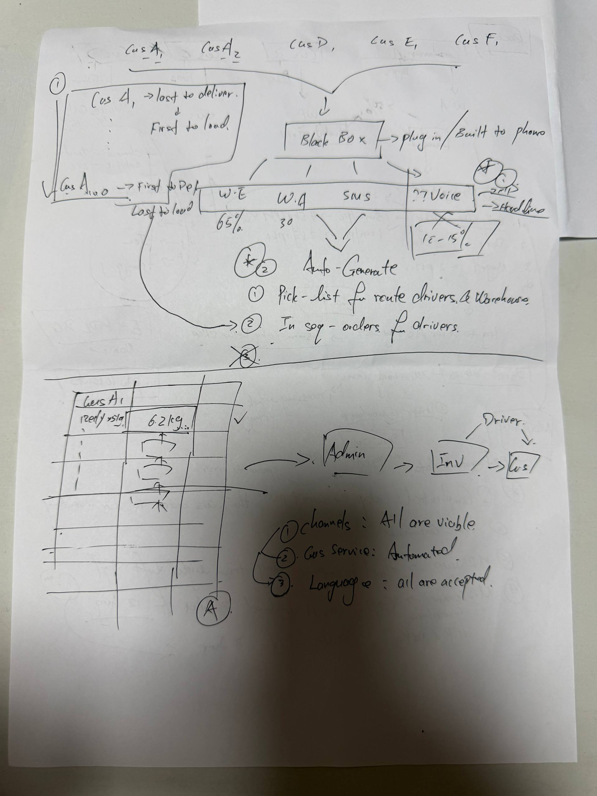

01
Capture every channel
WhatsApp, WeChat or similar text, SMS, and hotline calls flow into one order inbox without forcing customers into a new app.
A review-first order operations system for Zhao: capture WhatsApp, WeChat, SMS, and voice orders; map customer phrasing to inventory; then generate warehouse picklists, driver day books, and ERP-ready invoice records.
Customers already know how to order. The business pain is translating informal, multilingual, multi-channel requests into the exact product, pack, route, loading, and invoice records that operations trust.
WhatsApp, WeChat or similar text, SMS, and hotline calls flow into one order inbox without forcing customers into a new app.
Product nicknames, mixed languages, delivery dates, pack sizes, carton counts, and shorthand become structured order lines.
Low-confidence SKU, unit, date, duplicate, or inventory matches go to an admin queue instead of silently becoming fulfillment mistakes.
Approved lines become warehouse picklists, route-aware driver sheets, loading sequence, confirmations, and ERP-ready invoice records.
These diagrams are implementation-facing but readable by an operator. The key decision is to keep humans in the loop wherever confidence is low.
flowchart LR
subgraph Channels["Customer order channels"]
A["WhatsApp\nmajority"]
B["WeChat / text"]
C["SMS"]
D["Voice / hotline\n10-15% est."]
end
subgraph OrderOps["Review-first OrderOps layer"]
direction LR
Intake["OrderOps\nintake"]
Intake --> Parse["Parse\nmessage / call"]
Parse --> Normalize["Normalize\norder fields"]
Normalize --> Match["SKU and inventory\nmatch"]
Match --> Review{"Confidence\nhigh?"}
Review -->|"No"| Admin["Admin exception review"]
Admin --> Generate["Generate\nops outputs"]
Review -->|"Yes"| Generate
end
subgraph Outputs["Controlled operational outputs"]
direction TB
Picklist["Warehouse\npicklist"]
RouteSheet["Driver\nroute sheet"]
ERP["ERP / invoice\ndraft"]
CustomerService["Customer\nconfirmation"]
end
A --> Intake
B --> Intake
C --> Intake
D --> Intake
Generate --> Picklist
Generate --> RouteSheet
Generate --> ERP
Generate --> CustomerService
classDef channel fill:#f6f6f8,stroke:#d8dbe2,color:#011821;
classDef process fill:#ffffff,stroke:#d8dbe2,color:#011821;
classDef core fill:#111a4a,stroke:#111a4a,color:#ffffff;
classDef decision fill:#c1e8ef,stroke:#167e6c,color:#023247;
classDef review fill:#fff3ec,stroke:#ec652b,color:#011821;
classDef output fill:#ffffff,stroke:#167e6c,color:#023247;
class A,B,C,D channel;
class Intake core;
class Parse,Normalize,Match,Generate process;
class Review decision;
class Admin review;
class Picklist,RouteSheet,ERP,CustomerService output;
flowchart LR
Order["Incoming order\nBelly slice 10kg\n1.5mm, tomorrow"] --> Extract["Extract entities"]
Extract --> Fields["Field set\ncustomer, date, product,\nvariant, quantity, unit,\npack size, route"]
Fields --> SKU["SKU matcher"]
SKU --> Inv{"Inventory\nmatch?"}
Inv -->|"Exact or high confidence"| Line["Structured\norder line"]
Inv -->|"Ambiguous product / unit"| Exception["Exception queue"]
Exception --> Admin["Admin chooses correct SKU\nor asks customer"]
Admin --> Line
subgraph Outputs["Trusted downstream tasks"]
direction TB
Pick["Warehouse\npick task"]
Driver["Driver\ndelivery task"]
Invoice["Invoice\nline"]
end
Line --> Pick
Line --> Driver
Line --> Invoice
classDef input fill:#f6f6f8,stroke:#d8dbe2,color:#011821;
classDef process fill:#ffffff,stroke:#d8dbe2,color:#011821;
classDef decision fill:#c1e8ef,stroke:#167e6c,color:#023247;
classDef review fill:#fff3ec,stroke:#ec652b,color:#011821;
classDef output fill:#ffffff,stroke:#167e6c,color:#023247;
class Order input;
class Extract,Fields,SKU,Line process;
class Inv decision;
class Exception,Admin review;
class Pick,Driver,Invoice output;
flowchart LR
subgraph Plan["Route plan"]
Orders["Approved\norders"] --> R1["Customer A1,\nA2, D, E, F"]
R1 --> Drop["Delivery order\nfirst to last"]
Drop --> Load["Load order\nlast delivery first"]
end
subgraph Prep["Warehouse prep"]
Picklist["Picklist grouped by route,\ncustomer, SKU, quantity"]
Warehouse["Warehouse team\n04:00-04:30 prep window"]
Check["Picked / short / substituted status"]
Picklist --> Warehouse --> Check
end
subgraph Deliver["Driver and ERP"]
DriverBook["Driver day book\nordered stops + order lines"]
Delivery["Deliver and\nrecord result"]
ERP["ERP invoice\nfinal record"]
DriverBook --> Delivery --> ERP
end
Load --> Picklist
Load --> DriverBook
Check --> DriverBook
classDef input fill:#f6f6f8,stroke:#d8dbe2,color:#011821;
classDef process fill:#ffffff,stroke:#d8dbe2,color:#011821;
classDef timing fill:#c1e8ef,stroke:#167e6c,color:#023247;
classDef output fill:#ffffff,stroke:#167e6c,color:#023247;
class Orders input;
class R1,Drop,Load,Picklist,DriverBook,Check,Delivery process;
class Warehouse timing;
class ERP output;
flowchart LR
Start((Start)) --> Captured["Captured"]
Captured --> Parsed["Parsed"]
Parsed -->|"high confidence"| Matched["Matched"]
Parsed -->|"low confidence or ambiguity"| NeedsReview["Needs review"]
NeedsReview -->|"admin resolves"| Matched
NeedsReview -->|"missing date / SKU / quantity"| CustomerClarification["Customer clarification"]
CustomerClarification --> Parsed
Matched --> Approved["Approved"]
Approved --> PicklistGenerated["Picklist generated"]
PicklistGenerated --> Picked["Picked"]
Picked --> Loaded["Loaded"]
Loaded --> Delivered["Delivered"]
Delivered --> Invoiced["Invoiced"]
Picked -->|"inventory issue"| ShortOrSubstitution["Short or substitution"]
ShortOrSubstitution -->|"admin confirms substitute"| Approved
classDef start fill:#111a4a,stroke:#111a4a,color:#ffffff;
classDef state fill:#ffffff,stroke:#d8dbe2,color:#011821;
classDef review fill:#fff3ec,stroke:#ec652b,color:#011821;
classDef output fill:#ffffff,stroke:#167e6c,color:#023247;
class Start start;
class Captured,Parsed,Matched,Approved,PicklistGenerated,Picked,Loaded,Delivered state;
class NeedsReview,CustomerClarification,ShortOrSubstitution review;
class Invoiced output;
The first version should prove the transformation from raw order to operational paperwork, without replacing the ERP or removing human review.
Zhao's team receives orders through multiple informal channels and manually converts them into the correct operational records. Product mapping is complicated, early processing is time consuming, long-term night-shift staffing is hard, and miscommunication can create wrong product, quantity, date, route, or invoice outcomes.
A review-first OrderOps layer ingests customer messages and voice transcripts, parses them into structured order lines, maps product phrases to inventory, flags ambiguity, and generates picklists, route sheets, confirmations, and invoice-ready exports.
| Area | Decision | Why it matters |
|---|---|---|
| Order intake | Capture WhatsApp, WeChat/text, SMS, and call transcripts in one review queue. | Customers should not need to change behavior for the system to be useful. |
| SKU matching | Use customer aliases, product dictionary, pack rules, and confidence scoring. | Wrong product or unit mappings are the highest-risk failure mode. |
| Human review | Route ambiguous lines to admin with the reason attached. | The first version should build trust before automation expands. |
| Fulfillment | Generate warehouse picklists and driver day books from approved orders only. | Operational documents must be treated as controlled outputs. |
| ERP handoff | Export invoice-ready records and preserve raw-message audit trails. | Finance needs traceability from message to billed line. |
The demo should prove one narrow thing: trusted translation.
Start with a self-contained prototype using sample customer orders and a small product dictionary. Then connect real channels only after the review queue is trustworthy.
Paste or import sample WhatsApp, text, SMS, and call-note orders into a unified order inbox.
Show parsed customer, SKU, pack size, quantity, unit, delivery date, route, and confidence.
Let admin resolve ambiguous product or quantity lines and save the corrected alias.
Generate a warehouse picklist, driver sheet, and ERP export preview from approved lines.
The artifact is based on two handwritten workflow sketches. Some channel labels, product terms, and route locations remain assumptions until confirmed.

